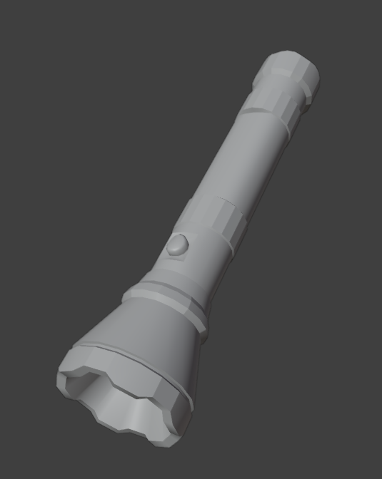
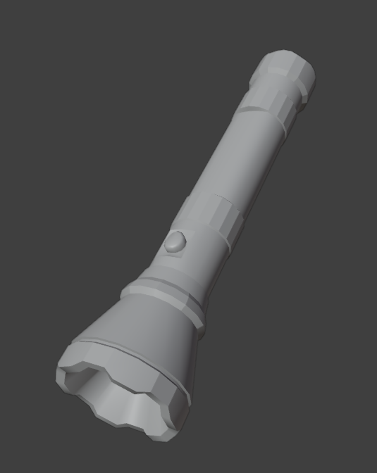

Autumn Ryan | 3D Art
Home ContactPostmortem
Base Character
Base for Postmortem's main character. 23,602 tris, modeled in Blender.
Survival Prop Set
Basic survival props made for Postmortem. Modeled in Blender.

Base for Postmortem's main character. 23,602 tris, modeled in Blender.
Basic survival props made for Postmortem. Modeled in Blender.
